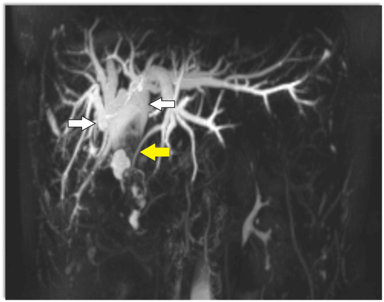
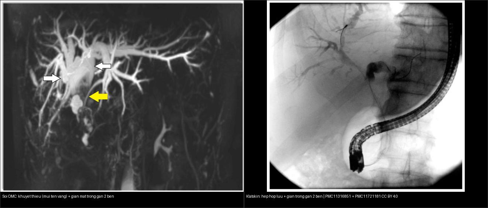

131 — Tắc mật: sỏi OMC, Klatskin & xơ hóa / Biliary obstruction
Tags: pattern:tac-mat vung:duong-mat protocol:MRCP incidentaloma:gian-duong-mat
Mức chắc chắn (certainty): tổng hợp y văn (literature synthesis) — nhóm tự biên từ y văn mở, chưa gắn ca nguyên văn đơn lẻ.
1. Tổng quan — trong gan vs ngoài gan + double-duct
- Tắc ngoài gan (sỏi OMC, u đầu tụy, Klatskin ngoài): giãn cả trong + ngoài gan; tắc trong gan khu trú: chỉ nhánh trên chỗ tắc.
- Double-duct (dấu ống đôi): giãn mật + giãn ống tụy + cắt cụt đột ngột cả 2 = u đầu tụy (xem ảnh bài 136).
- Klatskin (hilar CCC): hẹp/stricture hợp lưu + giãn trong gan 2 bên + teo thùy (thường trái) — Bismuth-Corlette I–IV (càng cao càng khó mổ).
- Ngưỡng: OMC giãn > 6–8 mm (sau mổ túi mật tới 8–10 mm còn chấp nhận; +1 mm mỗi thập kỷ sau 60 tuổi); bilirubin trực tiếp tăng.
- TẠI SAO MRCP thấy sỏi mà CT có thể bỏ: MRCP là T2W nước–sáng — dịch mật sáng còn sỏi tối (khuyết thiếu filling defect); sỏi cholesterol đồng tỷ trọng dịch mật nên tàng hình trên CT (CT chỉ thấy sỏi vôi hóa). Sỏi thật luôn nằm thấp theo trọng lực + không đổi theo tư thế.

MRCP: cây đường mật giãn hai bên (mũi tên trắng) + khuyết thiếu lấp đầy trong OMC (mũi tên vàng) — sỏi OMC. Nguồn: Cureus 2024, PMC11316851, CC BY 4.0.2. Gamut vàng da tắc mật
- Sỏi OMC: sỏi (khuyết thiếu MRCP / cản quang CT) trong OMC giãn + cơn đau quặn + sốt (tam chứng Charcot; ngũ chứng Reynolds khi nặng) — ERCP lấy sỏi.
- Klatskin: stricture hợp lưu + giãn 2 bên + teo thùy — Bismuth + dẫn lưu + mổ/xạ.
- U đầu tụy: double-duct + cắt cụt (bài 136).
- Xơ hóa đường mật (PSC): hẹp rải rác + beads + viêm ruột (IBD) — MRCP theo dõi + tầm soát CCC.
- Mimic cần biết: lao hạch quanh tụy, viêm đường mật tăng bạch cầu ái toan (eosinophilic cholangitis), IgG4-sclerosing cholangitis — đều có thể giả u đường mật.
3. Bảng so sánh phân biệt (ma trận đối chiếu)
| Thực thể (entity) | Hình ảnh (MRCP/CT) | Chốt vào (rule-in) | Chốt loại (rule-out) | Gợi ý xác nhận |
|---|---|---|---|---|
| Sỏi OMC | Khuyết thiếu trong OMC giãn (MRCP) + cơn đau/sốt | Sỏi cản quang/khuyết thiếu + Charcot + sỏi thấp theo trọng lực | Không đau/sốt + hẹp nhẵn dài → nghĩ Klatskin | ERCP + kháng sinh |
| Klatskin (hilar CCC) | Stricture hợp lưu + giãn trong gan 2 bên + teo thùy | Hẹp tại hợp lưu + giãn 2 bên + teo thùy | Sỏi trong lòng → không phải u | Dẫn lưu + mổ/xạ theo Bismuth I–IV |
| U đầu tụy (PDAC) | Double-duct + cắt cụt đột ngột | 2 ống cùng tắc (double-duct) | Chỉ mật tắc đơn thuần → nghĩ Klatskin/sỏi | Whipple khi còn mổ được |
| PSC | Hẹp rải rác + beads + IBD | Nhiều đoạn hẹp xen giãn (beads) + viêm ruột | Hẹp đơn độc tại hợp lưu → nghĩ Klatskin | UDCA + tầm soát CCC |
| IgG4-SC / u giả viêm | Hẹp dài, thành dày, ± tụy giả u | Đáp ứng steroid + IgG4 máu cao + tổn thương nhiều tạng | Không đáp ứng steroid + hẹp tiến triển → nghĩ K | Corticosteroid thử + sinh thiết |

Trái: sỏi OMC — khuyết thiếu (mũi tên vàng) + giãn mật trong gan 2 bên. Phải: Klatskin — hẹp tại hợp lưu + giãn trong gan 2 bên. Nguồn: PMC11316851 + PMC11721181, CC BY 4.0. Ảnh ghép letterbox.4. Protocol
- Siêu âm đầu tay: giãn đường mật trong gan + OMC (giãn > 6–8 mm) + sỏi túi mật kèm — nhanh, không tia X.
- MRCP + MRI cản quang: bản đồ đường mật không xâm lấn (stricture, sỏi, Bismuth) — chỉ định khi nghi tắc nhưng siêu âm không kết luận.
- CT bụng đa thì: u đầu tụy + hạch + mạch (xâm lấn ĐM gan/TM cửa quyết định mổ Klatskin).
- ERCP: vừa chẩn đoán vừa điều trị (lấy sỏi/stent) khi tắc ngoài gan.
5. Cạm bẫy
- Khí sau ERCP/stent giả sỏi khí (pneumobilia — nổi phía trước theo trọng lực) — hỏi thủ thuật.
- Khuyết thiếu MRCP giả sỏi: bóng khí + flow-void dịch mật + ĐM gan phải bắt chéo sau ống gan chung — sỏi thật luôn nằm thấp theo trọng lực + không đổi theo tư thế.
- Klatskin type IV 2 bên đừng mổ triệt căn mù — hội chẩn + dẫn lưu + xạ.
- Viêm tụy cấp phù nề chèn ép OMC thoáng qua — hết viêm chụp lại, đừng ERCP vội.
- Tắc mật do lao hạch / IgG4 có thể đáp ứng steroid — đừng vội mổ triệt căn khi chưa loại trừ nguyên nhân lành tính.
6. Tự lượng giá — Blind Quiz (ảnh)
Ca 1 — Vàng da + sốt + đau HSP (Charcot). MRCP thấy cây đường mật giãn 2 bên và một khuyết thiếu trong OMC.
- Hỏi: mô tả khuyết thiếu? Chẩn đoán + thủ thuật gì? Vì sao CT có thể bỏ sót?
Bấm để hiện đáp án (findings + chẩn đoán)
- Findings: cây đường mật trong gan giãn hai bên (mũi tên trắng) + khuyết thiếu lấp đầy (filling defect) trong OMC (mũi tên vàng).
- Chẩn đoán: sỏi OMC + viêm đường mật cấp → ERCP lấy sỏi + kháng sinh. CT có thể bỏ sót vì sỏi cholesterol đồng tỷ trọng dịch mật (chỉ sỏi vôi mới thấy trên CT).
- Nguồn: Cureus 2024, PMC11316851, CC BY 4.0.
Ca 2 — Ghép đối chiếu: hai bệnh nhân vàng da tắc mật — bên nào là sỏi, bên nào là u Klatskin?
Bấm để hiện đáp án (findings + chẩn đoán)
- Trái — sỏi OMC: MRCP có khuyết thiếu lấp đầy trong lòng ống (mũi tên vàng) → dịch mật sáng, sỏi tối. Phải — Klatskin: hẹp nhẵn tại hợp lưu + giãn trong gan 2 bên (ERCP/chụp đường mật).
- Chốt: sỏi = khuyết thiếu trong lòng; u = hẹp (stricture) ăn lan thành ống. Nguồn: PMC11316851 + PMC11721181, CC BY 4.0.
Ca 3 — Vàng da âm ỉ + gầy + stricture hợp lưu + giãn 2 bên + teo thùy trái: Bismuth mấy? Mổ được không? (Bảng mục 3.)
Bấm để hiện đáp án (findings + chẩn đoán)
- Klatskin (hợp lưu 2 bên): Bismuth cao — dẫn lưu + hội chẩn mổ/xạ (khó triệt căn). Teo thùy trái là dấu hiệu bệnh lan lâu (thùy bị tắc lâu teo lại).
- Nguồn số liệu: y văn (xem
sources.md).
Bài liên quan chéo
- 100 – Tổng quan hệ Bụng
- 130 – Túi mật (sỏi túi mật)
- 136 – U/nang tụy (double-duct PDAC)
- 121 – LI-RADS & HCC (chẩn đoán phân biệt khối gan)
Ảnh
- Xem
images/CREDITS.md. Ảnh bài này đều CC BY 4.0 → được phép ghép letterbox (composite).
Không dùng để chẩn đoán độc lập khi chưa có người hướng dẫn.